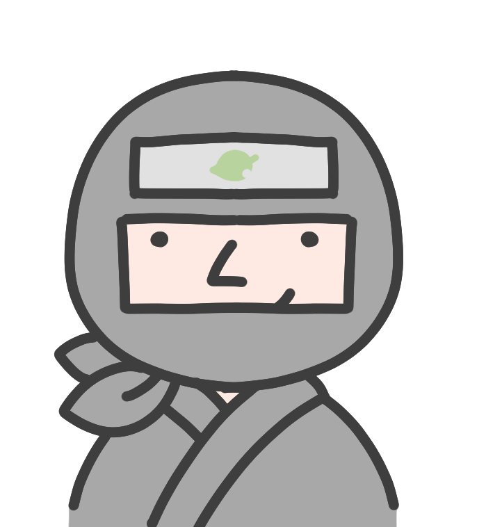

塾
塾
PROGRAMMING SCHOOL
HAGAKURE PROGRAMMING塾
Codex デスクトップアプリ
触ってみよう会
「CLIのCodex」じゃないよ。Macアプリになった“エージェントの司令塔”を、実際に動かして体験します。
2026年6月 勉強会／ 実機デモあり・初心者歓迎
所要 30〜45分
今日のゴール
これが分かれば勝ち
- Codexアプリが何者かざっくり説明できる（CLI / IDE拡張との違い）
- 自分のPC（MacWindows）に入れて起動できる
- タスクを投げて → 差分を見て → 採用する基本の流れが分かる
- 並列エージェントや“超アプリ”機能の雰囲気をつかむ
- 使いどころと注意点（権限・コスト）が分かる
つかみ
いつのまにか “超アプリ” 化してた
- 2026年初頭、OpenAIが Codexのデスクトップアプリ をリリース
- 1週間で 100万ダウンロード、Super Bowl広告まで打つ盛り上がり
- もう「コード補完ツール」じゃない。AIエージェントを束ねて働かせる作業場へ
- あなたは“コードを書く人”から、“エージェントを動かすオペレーター”に
💡 ポイント：Codexには CLI版・IDE拡張版・デスクトップアプリ版 がある。今日はアプリ版の話。
GUIがカッコイイ時代、
また来たな…！

What is it?
Codexアプリ＝エージェントの司令塔
🖥️ネイティブなデスクトップアプリ
ブラウザ不要。ファイル・ターミナル・Gitに直接つながる
🥷複数エージェントを並列実行
各タスクが分離された作業場で同時に動く
🔍差分（diff）でレビュー
結果を見て採用・修正・破棄を選べる
🧠記憶・連携・長時間タスク
好みを覚え、外部ツールと連携、放置で進む
ChatGPTは「会話」、CLIは「ターミナル」、アプリは 「画面でエージェントを管理」 するイメージ。
整理
Codexの3つの顔
⌨️ CLI
ターミナルで対話。軽量・スクリプト向き。CI連携も。
🧩 IDE拡張
VS Codeなどに同居。エディタの中で完結したい人向け。
🖥️ デスクトップアプリ 今日これ
複数エージェントの司令塔。レビュー・並列・PC操作・連携まで。
中身は同じ系譜。
用途で使い分けるのがコツ。今日はアプリ！
セットアップ
入れて、ログインするだけ
macOS Apple Silicon
- 公式サイトから macOS版インストーラをダウンロード
- M1/M2/M3以降が必須（Intel Macは非対応）
- アプリを開いて ChatGPTアカウントでログイン
- 使うプロジェクト用のフォルダを指定
Windows ネイティブ対応
- 公式サイトから Windows版アプリをダウンロード
- PowerShell / Git とネイティブ連携
- 同じく ChatGPTアカウントでログイン
- winget / Chocolatey など環境ともなじむ
基本操作
使い方は超シンプル
① タスクを書く
→
② エージェントが作業
→
③ 差分を見る
→
④ 採用 / 修正 / 破棄
- 「READMEを書いて」「このバグ直して」など自然言語で指示
- 結果は 差分（diff） で提示 → 中身を確認してからマージ
- 複数ファイル・複数ターミナルを画面で見ながら進められる
目玉① 並列実行
忍者みたいに、同時に何人も働く
- 複数タスクを 同時並行 で実行できる
- 各エージェントは 分離されたGit worktree で作業 → 変更が混ざらない
- 例：Aはリファクタ、Bはテスト追加、Cはドキュメント更新
- 結果はそれぞれ差分で比較 → 良いものだけ採用
🥷 まさに“忍びの分身の術”。シニアエンジニアの働き方をマネしてる、と言われる所以。
目玉② 超アプリ機能
コード以外もこなす “何でも屋”
🖱️Computer Use
自分のカーソルでMac/PCを見て操作（クリック・入力）
🌐アプリ内ブラウザ
フロントの見た目を確認しながら直せる
🔌90+プラグイン連携
外部ツール・サービスとつながる
⏰スケジュール / 背景実行
定期タスクを自動でこなす
Live Demo
🎬 実機デモタイム
スライドはここまで。ここから実際に動かします。
- 実際の作業フォルダの中身を 「フォルダ内を整理して」
- コードを書いて 「バグを直して」
- 余裕があれば 並列タスク や ブラウザ確認 を実演
デモ実演
散らかったフォルダを Codex で片付ける
📂 Before（hoge フォルダ）
- 直下にメモが散乱＋18個のフォルダが乱立
- 仕事・私用・レシピ・領収書・ログがごちゃ混ぜ
- 命名バラバラ（要確認メモ2／所有者不明メモ1／日付不明…）
- 年代物・重複・置き場所不明ファイルだらけ
🤖 Codexに頼むこと
- ① 中身を読んでこのフォルダを要約して
- ② トピック／日付／重要度で整理案を提案して
- ③ リネーム・移動を実行し before/after のツリーを見せて
💡 見どころ：ファイル名だけでなく中身も読んで分類する／「パスワード保存禁止」等の注意ファイルの扱い／移動は差分を確認してから適用。
使いどころ
得意なこと / まだ苦手なこと
👍 向いてる
- 長時間・繰り返しのタスク
- 並列でいける作業（テスト・リファクタ・ドキュメント）
- PRレビュー、定型作業の自動化
- コード以外の知的作業（調査・資料）
🤔 まだ注意
- 仕様が曖昧なまま丸投げ（指示は具体的に）
- 重要な本番環境への直接操作
- 最終的な判断・責任は人間が持つ
注意点
“便利”の裏側もチェック
🔐権限の渡しすぎ注意
ファイル・PC操作の許可範囲は最小限に
👀画面監視系のプライバシー
Computer Useやメモリは“見られてる”前提で
✅差分は必ずレビュー
採用前に中身を確認。鵜呑みにしない
⚠️ サンドボックスは オープンソースで自己ホストも可能。セキュリティ要件がある組織はそこも検討材料に。
まとめ
今日のおさらい
- Codexアプリは エージェントの司令塔。CLI/IDEと使い分け
- MacはApple Silicon、Winはネイティブ。ChatGPTログインで開始
- 基本は タスク → 差分 → 採用。承認は人間が握る
- 並列エージェント＆超アプリ機能で“何でも屋”に
- 権限・プライバシー・コストは意識して、まずは小さく試す
Q & A
質問タイム & もくもく
触ってみた感想・つまづきポイント、なんでもどうぞ。
一緒にもくもく触る時間にしてもOK！
お疲れさまでした 🎉